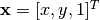
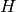
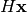
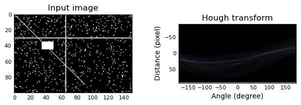
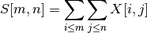

Module: transform¶
| scikits.image.transform.fast_homography | Projective transformation (homography). |
| scikits.image.transform.fft(x[, n, axis, ...]) | Return discrete Fourier transform of real or complex sequence. |
| scikits.image.transform.fftshift(x[, axes]) | Shift the zero-frequency component to the center of the spectrum. |
| scikits.image.transform.frt2(a) | Compute the 2-dimensional finite radon transform (FRT) for an n x n |
| scikits.image.transform.homography(image, H) | Perform a projective transformation (homography) on an image. |
| scikits.image.transform.hough(img[, theta]) | Perform a straight line Hough transform. |
| scikits.image.transform.ifft(x[, n, axis, ...]) | Return discrete inverse Fourier transform of real or complex sequence. |
| scikits.image.transform.ifrt2(a) | Compute the 2-dimensional inverse finite radon transform (iFRT) for |
| scikits.image.transform.integral_image(x) | Integral image / summed area table. |
| scikits.image.transform.integrate(ii, r0, ...) | Use an integral image to integrate over a given window. |
| scikits.image.transform.iradon(radon_image) | Inverse radon transform. |
| scikits.image.transform.probabilistic_hough(img) | Performs a progressive probabilistic line Hough transform and returns the detected lines. |
| scikits.image.transform.radon(image[, theta]) | Calculates the radon transform of an image given specified projection angles. |
fast_homography¶
- scikits.image.transform.fast_homography()¶
Projective transformation (homography).
Perform a projective transformation (homography) of a floating point image, using bi-linear interpolation.
For each pixel, given its homogeneous coordinate , its target position is calculated by multiplying with the given matrix, , to give . E.g., to rotate by theta degrees clockwise, the matrix should be
[[cos(theta) -sin(theta) 0] [sin(theta) cos(theta) 0] [0 0 1]]
or, to translate x by 10 and y by 20,
[[1 0 10] [0 1 20] [0 0 1 ]].
Parameters : image : 2-D array
Input image.
H : array of shape (3, 3)
Transformation matrix H that defines the homography.
output_shape : tuple (rows, cols)
Shape of the output image generated.
order : int
Order of splines used in interpolation.
mode : {‘constant’, ‘mirror’, ‘wrap’}
How to handle values outside the image borders.
cval : string
Used in conjunction with mode ‘C’ (constant), the value outside the image boundaries.
fft¶
- scikits.image.transform.fft(x, n=None, axis=-1, overwrite_x=0)¶
Return discrete Fourier transform of real or complex sequence.
The returned complex array contains y(0), y(1),..., y(n-1) where
y(j) = (x * exp(-2*pi*sqrt(-1)*j*np.arange(n)/n)).sum().
Parameters : x : array_like
Array to Fourier transform.
n : int, optional
Length of the Fourier transform. If n < x.shape[axis], x is truncated. If n > x.shape[axis], x is zero-padded. The default results in n = x.shape[axis].
axis : int, optional
Axis along which the fft’s are computed; the default is over the last axis (i.e., axis=-1).
overwrite_x : bool, optional
If True the contents of x can be destroyed; the default is False.
Returns : z : complex ndarray
- with the elements:
[y(0),y(1),..,y(n/2),y(1-n/2),...,y(-1)] if n is even [y(0),y(1),..,y((n-1)/2),y(-(n-1)/2),...,y(-1)] if n is odd
- where
y(j) = sum[k=0..n-1] x[k] * exp(-sqrt(-1)*j*k* 2*pi/n), j = 0..n-1
Note that y(-j) = y(n-j).conjugate().
See also
- ifft
- Inverse FFT
- rfft
- FFT of a real sequence
Notes
The packing of the result is “standard”: If A = fft(a, n), then A[0] contains the zero-frequency term, A[1:n/2+1] contains the positive-frequency terms, and A[n/2+1:] contains the negative-frequency terms, in order of decreasingly negative frequency. So for an 8-point transform, the frequencies of the result are [ 0, 1, 2, 3, 4, -3, -2, -1].
For n even, A[n/2] contains the sum of the positive and negative-frequency terms. For n even and x real, A[n/2] will always be real.
This is most efficient for n a power of two.
Examples
>>> from scipy.fftpack import fft, ifft >>> x = np.arange(5) >>> np.allclose(fft(ifft(x)), x, atol=1e-15) #within numerical accuracy. True
fftshift¶
- scikits.image.transform.fftshift(x, axes=None)¶
Shift the zero-frequency component to the center of the spectrum.
This function swaps half-spaces for all axes listed (defaults to all). Note that y[0] is the Nyquist component only if len(x) is even.
Parameters : x : array_like
Input array.
axes : int or shape tuple, optional
Axes over which to shift. Default is None, which shifts all axes.
Returns : y : ndarray
The shifted array.
See also
- ifftshift
- The inverse of fftshift.
Examples
>>> freqs = np.fft.fftfreq(10, 0.1) >>> freqs array([ 0., 1., 2., 3., 4., -5., -4., -3., -2., -1.]) >>> np.fft.fftshift(freqs) array([-5., -4., -3., -2., -1., 0., 1., 2., 3., 4.])
Shift the zero-frequency component only along the second axis:
>>> freqs = np.fft.fftfreq(9, d=1./9).reshape(3, 3) >>> freqs array([[ 0., 1., 2.], [ 3., 4., -4.], [-3., -2., -1.]]) >>> np.fft.fftshift(freqs, axes=(1,)) array([[ 2., 0., 1.], [-4., 3., 4.], [-1., -3., -2.]])
frt2¶
- scikits.image.transform.frt2(a)¶
Compute the 2-dimensional finite radon transform (FRT) for an n x n integer array.
Parameters : a : array_like
A 2-D square n x n integer array.
Returns : FRT : 2-D ndarray
Finite Radon Transform array of (n+1) x n integer coefficients.
See also
- ifrt2
- The two-dimensional inverse FRT.
Notes
The FRT has a unique inverse iff n is prime. [FRT] The idea for this algorithm is due to Vlad Negnevitski.
References
[FRT] A. Kingston and I. Svalbe, “Projective transforms on periodic discrete image arrays,” in P. Hawkes (Ed), Advances in Imaging and Electron Physics, 139 (2006) Examples
Generate a test image: Use a prime number for the array dimensions
>>> SIZE = 59 >>> img = np.tri(SIZE, dtype=np.int32)
Apply the Finite Radon Transform:
>>> f = frt2(img)
Plot the results:
>>> import matplotlib.pyplot as plt >>> plt.imshow(f, interpolation='nearest', cmap=plt.cm.gray) >>> plt.xlabel('Angle') >>> plt.ylabel('Translation') >>> plt.show()
homography¶
- scikits.image.transform.homography(image, H, output_shape=None, order=1, mode='constant', cval=0.0)¶
Perform a projective transformation (homography) on an image.
For each pixel, given its homogeneous coordinate , its target position is calculated by multiplying with the given matrix, , to give . E.g., to rotate by theta degrees clockwise, the matrix should be
[[cos(theta) -sin(theta) 0] [sin(theta) cos(theta) 0] [0 0 1]]
or, to translate x by 10 and y by 20,
[[1 0 10] [0 1 20] [0 0 1 ]].
Parameters : image : 2-D array
Input image.
H : array of shape (3, 3)
Transformation matrix H that defines the homography.
output_shape : tuple (rows, cols)
Shape of the output image generated.
order : int
Order of splines used in interpolation.
mode : string
How to handle values outside the image borders. Passed as-is to ndimage.
cval : string
Used in conjunction with mode ‘constant’, the value outside the image boundaries.
hough¶
- scikits.image.transform.hough(img, theta=None)¶
Perform a straight line Hough transform.
Parameters : img : (M, N) ndarray
Input image with nonzero values representing edges.
theta : 1D ndarray of double
Angles at which to compute the transform, in radians. Defaults to -pi/2 .. pi/2
Returns : H : 2-D ndarray of uint64
Hough transform accumulator.
distances : ndarray
Distance values.
theta : ndarray
Angles at which the transform was computed.
Examples
Generate a test image:
>>> img = np.zeros((100, 150), dtype=bool) >>> img[30, :] = 1 >>> img[:, 65] = 1 >>> img[35:45, 35:50] = 1 >>> for i in range(90): >>> img[i, i] = 1 >>> img += np.random.random(img.shape) > 0.95
Apply the Hough transform:
>>> out, angles, d = hough(img)
Plot the results:
>>> import matplotlib.pyplot as plt >>> plt.imshow(out, cmap=plt.cm.bone) >>> plt.xlabel('Angle (degree)') >>> plt.ylabel('Distance %d (pixel)' % d[0]) >>> plt.show()
import numpy as np import matplotlib.pyplot as plt from scikits.image.transform import hough img = np.zeros((100, 150), dtype=bool) img[30, :] = 1 img[:, 65] = 1 img[35:45, 35:50] = 1 for i in range(90): img[i, i] = 1 img += np.random.random(img.shape) > 0.95 out, angles, d = hough(img) plt.subplot(1, 2, 1) plt.imshow(img, cmap=plt.cm.gray) plt.title('Input image') plt.subplot(1, 2, 2) plt.imshow(out, cmap=plt.cm.bone, extent=(d[0], d[-1], np.rad2deg(angles[0]), np.rad2deg(angles[-1]))) plt.title('Hough transform') plt.xlabel('Angle (degree)') plt.ylabel('Distance (pixel)') plt.subplots_adjust(wspace=0.4) plt.show()
(Source code, png)

{kind=link}
ifft¶
- scikits.image.transform.ifft(x, n=None, axis=-1, overwrite_x=0)¶
Return discrete inverse Fourier transform of real or complex sequence.
The returned complex array contains y(0), y(1),..., y(n-1) where
y(j) = (x * exp(2*pi*sqrt(-1)*j*np.arange(n)/n)).mean().
Parameters : x : array_like
Transformed data to invert.
n : int, optional
Length of the inverse Fourier transform. If n < x.shape[axis], x is truncated. If n > x.shape[axis], x is zero-padded. The default results in n = x.shape[axis].
axis : int, optional
Axis along which the ifft’s are computed; the default is over the last axis (i.e., axis=-1).
overwrite_x : bool, optional
If True the contents of x can be destroyed; the default is False.
ifrt2¶
- scikits.image.transform.ifrt2(a)¶
Compute the 2-dimensional inverse finite radon transform (iFRT) for an (n+1) x n integer array.
Parameters : a : array_like
A 2-D (n+1) row x n column integer array.
Returns : iFRT : 2-D n x n ndarray
Inverse Finite Radon Transform array of n x n integer coefficients.
See also
- frt2
- The two-dimensional FRT
Notes
The FRT has a unique inverse iff n is prime. See [FRT] for an overview. The idea for this algorithm is due to Vlad Negnevitski.
References
[FRT] A. Kingston and I. Svalbe, “Projective transforms on periodic discrete image arrays,” in P. Hawkes (Ed), Advances in Imaging and Electron Physics, 139 (2006) Examples
>>> SIZE = 59 >>> img = np.tri(SIZE, dtype=np.int32)
Apply the Finite Radon Transform:
>>> f = frt2(img)
Apply the Inverse Finite Radon Transform to recover the input
>>> fi = ifrt2(f)
Check that it’s identical to the original
>>> assert len(np.nonzero(img-fi)[0]) == 0
integral_image¶
- scikits.image.transform.integral_image(x)¶
Integral image / summed area table.
The integral image contains the sum of all elements above and to the left of it, i.e.:

Parameters : x : ndarray
Input image.
Returns : S : ndarray
Integral image / summed area table.
References
[R91] F.C. Crow, “Summed-area tables for texture mapping,” ACM SIGGRAPH Computer Graphics, vol. 18, 1984, pp. 207-212.
integrate¶
- scikits.image.transform.integrate(ii, r0, c0, r1, c1)¶
Use an integral image to integrate over a given window.
Parameters : ii : ndarray
Integral image.
r0, c0 : int
Top-left corner of block to be summed.
r1, c1 : int
Bottom-right corner of block to be summed.
Returns : S : int
Integral (sum) over the given window.
iradon¶
- scikits.image.transform.iradon(radon_image, theta=None, output_size=None, filter='ramp', interpolation='linear')¶
Inverse radon transform.
Reconstruct an image from the radon transform, using the filtered back projection algorithm.
Parameters : radon_image : array_like, dtype=float
Image containing radon transform (sinogram). Each column of the image corresponds to a projection along a different angle.
theta : array_like, dtype=float, optional
Reconstruction angles (in degrees). Default: m angles evenly spaced between 0 and 180 (if the shape of radon_image is nxm)
output_size : int
Number of rows and columns in the reconstruction.
filter : str, optional (default ramp)
Filter used in frequency domain filtering. Ramp filter used by default. Filters available: ramp, shepp-logan, cosine, hamming, hann Assign None to use no filter.
interpolation : str, optional (default linear)
Interpolation method used in reconstruction. Methods available: nearest, linear.
Returns : output : ndarray
Reconstructed image.
Notes
It applies the fourier slice theorem to reconstruct an image by multiplying the frequency domain of the filter with the FFT of the projection data. This algorithm is called filtered back projection.
probabilistic_hough¶
- scikits.image.transform.probabilistic_hough(img, threshold=10, line_length=50, line_gap=10, theta=None)¶
Performs a progressive probabilistic line Hough transform and returns the detected lines.
Parameters : img : (M, N) ndarray
Input image with nonzero values representing edges.
value_threshold: int :
Threshold
line_length: int, optional (default 50) :
Minimum accepted length of detected lines. Increase the parameter to extract longer lines.
line_gap: int, optional, (default 10) :
Maximum gap between pixels to still form a line. Increase the parameter to merge broken lines more aggresively.
theta :1D ndarray, dtype=double, optional, default (-pi/2 .. pi/2) :
Angles at which to compute the transform, in radians.
Returns : lines : list
List of lines identified, lines in format ((x0, y0), (x1, y0)), indicating line start and end.
References
[R92] C. Galamhos, J. Matas and J. Kittler,”Progressive probabilistic Hough transform for line detection”, in IEEE Computer Society Conference on Computer Vision and Pattern Recognition, 1999.
radon¶
- scikits.image.transform.radon(image, theta=None)¶
Calculates the radon transform of an image given specified projection angles.
Parameters : image : array_like, dtype=float
Input image.
theta : array_like, dtype=float, optional (default np.arange(180))
Projection angles (in degrees).
Returns : output : ndarray
Radon transform (sinogram).